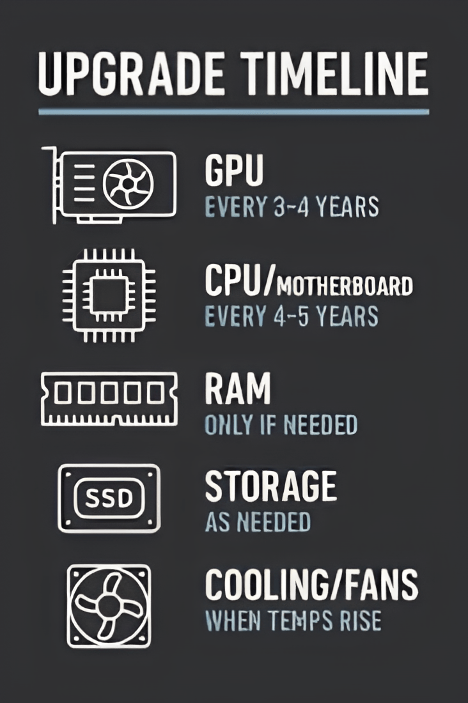

Het probleem
Veel laptops worden ontworpen als gesloten producten. Onderdelen zoals de batterij, opslag, poorten of zelfs het geheugen zijn vaak gelijmd, vastgesoldeerd of moeilijk bereikbaar. Daardoor wordt een relatief klein defect snel een reden om het volledige toestel te vervangen.
Dat heeft gevolgen voor zowel gebruiker als milieu. Een apparaat dat technisch gezien nog grotendeels bruikbaar is, verliest zijn waarde omdat een component niet makkelijk herstelbaar is. De logica van onderhoud verdwijnt en maakt plaats voor een logica van vervanging.

- Ontwerpkeuzes maken herstelling complex en duur.
- Korte productlevenscycli versterken de wegwerpcultuur.
- Toegang tot onderdelen en informatie blijft vaak beperkt.
Wereldwijde trends in
de productie van elektronisch afval
Geproduceerd elektronisch afval (in miljoen metrische ton)
Bron data: Market.us Scoop. De grafiek illustreert een stijging van 65% in e-waste over een periode van 10 jaar.
Dit is geen niche probleem. Deze visie richt zich namelijk op een brede en diverse doelgroep, individuele gebruikers van diverse leeftijden over de hele wereld. Het gaat namelijk over een globale verandering in visie over hoe we naar technologie kijken en hoe dit ook anders kan.
Beperkte herstelbaarheid verkort de levensduur van apparaten, verhoogt de totale gebruikskost en zorgt voor meer druk op schaarse grondstoffen.